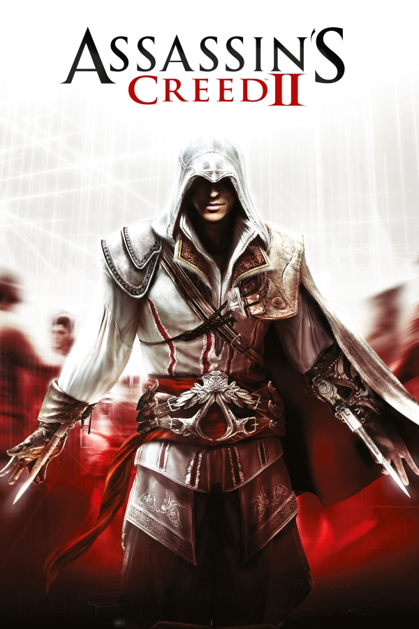

Assassin's Creed II
Assassin's Creed II
Details
|  | |
| Playtime | Not Played |
| Last Activity | Never |
| Added | 5/6/2025 23:30:07 |
| Modified | 5/7/2025 0:46:56 |
| Completion Status | Not Played |
| Library | Playnite |
| Source | Steam |
| Platform | $PC (Windows) |
| Release Date | 3/9/2010 |
| Community Score | 72 |
| Critic Score | 90 |
| User Score | |
| Genre | Action Stealth |
| Developer | Ubisoft Montreal Ubisoft Ukraine |
| Publisher | Akella Ubisoft |
| Feature | Controller Support Single Player |
| Links | PCGamingWiki Official site HowLongToBeat IGDB SteamDB StrategyWiki MobyGames Wikipedia WSGF |
| Tag | Anvil Direct control Europe Historical Realistic Real-Time Renaissance Third Person |
Description
Assassin's Creed II is a 2009 action-adventure game developed by Ubisoft Montreal and published by Ubisoft. It is the second major installment in the Assassin's Creed series, and the sequel to 2007's Assassin's Creed. The game was first released on the PlayStation 3 and Xbox 360 in November 2009, and was later made available on Microsoft Windows in March 2010 and OS X in October 2010.
The game's plot is set in a fictional history of real-world events and follows the millennia-old struggle between the Assassins, who fight to preserve peace and free will, and the Templars, who desire peace through control. The framing story is set in the 21st century and follows Desmond Miles as he relives the genetic memories of his ancestor, Ezio Auditore da Firenze, to uncover the mysteries left behind by an ancient race known as the First Civilization in the hope of ending the Assassin-Templar conflict. The main narrative takes place at the height of the Renaissance in Italy from 1476 to 1499, and follows Ezio's journey as an Assassin while seeking revenge against those responsible for the death of his father and brothers. Gameplay focuses on using Ezio's combat, stealth, and parkour abilities to defeat enemies and explore the environment. The game features a large open world comprising several Italian cities, including Florence, Venice, Monteriggioni, San Gimignano, and Forlì, all of which have been accurately recreated to fit the game's historical setting.
Using a newly updated Anvil game engine, Assassin's Creed II began development shortly after the release of Assassin's Creed. As part of the marketing campaign for the game, Ubisoft released a three-part live-action short film, titled Assassin's Creed: Lineage, which serves as a prequel to the main story and stars most of the game's cast. During development, two chapters—titled The Battle of Forlì and Bonfire of the Vanities—were cut from the game due to time constraints, but were eventually released as downloadable expansion packs on Xbox Live and later to other platforms. Additional in-game bonuses such as missions, outfits, and weapons could be redeemed through Ubisoft's Uplay service.
Assassin's Creed II received universal critical acclaim from video game publications, with praise for its narrative, characters, world design, and improvements over the first game; however, the PC version was met with some criticism in relation to the digital rights management system, and thus had the always-online DRM permanently removed. Considered one of the best video games ever made, it sold more than nine million copies within six months. The game spawned two direct sequels: Assassin's Creed: Brotherhood (2010) and Assassin's Creed: Revelations (2011), and a spin-off, Assassin's Creed II: Discovery (2009), all of which expand on Ezio's story while introducing new plotlines, characters, and locations. The next numbered entry in the series, Assassin's Creed III, was released in 2012. Remastered versions of Assassin's Creed II, along with Brotherhood and Revelations, were released as part of The Ezio Collection compilation for the PlayStation 4 and Xbox One on November 15, 2016, and for the Nintendo Switch on February 17, 2022.
Gameplay
Assassin's Creed II is an action-adventure game played from a third-person perspective and set in an open world based on late 15th-century Renaissance Italy. Gameplay is nonlinear, and focuses on hack and slash combat, stealth, and exploration. The Animus 2.0, a new version of the machine of the same name present in Assassin's Creed, provides in-game context for changes and additions to several game elements. A database is also available, providing extra historical information about key landmarks, characters, and services that the player encounters. The health system has been made more dynamic, with synchronization to the Animus and causing the character to recover only from minor injuries. More grievous injuries require visiting a street-side doctor or use of medicine (which can be purchased from doctors or found on bodies).
The player may now swim in water, and Eagle Vision—the ability to identify specific people and landmarks—can now be used in third-person view and while moving. A young Leonardo da Vinci is present in the game, aiding the player by creating new weapons from translated "Codex pages" that Altaïr, the original game's main character, left behind for future Assassins' analysis and insight. Leonardo's flying machine (based on real-life aeroplanes) can also be used during one mission. Other means of transport available in the game include horses, which can only be ridden outside of the major cities; gondolas, found most prominently in Venice; and a carriage, which is also ridden during a mission involving Leonardo. Each of the places the player can visit is more detailed compared to Assassin's Creed, and NPCs have a more human-like behavior; for example, civilians can sometimes be caught coughing or sneezing. Additionally, the player can hire groups of mercenaries, courtesans, or thieves to fight, distract, or lure guards, respectively. A day and night cycle has been added to the game, giving the game more of a sense of time, in addition to setting missions and events at certain times of the day.
There are many ways to interact with NPCs. Money can be thrown to the ground, or a corpse carried and then deposited on the ground, may also serve as a distraction for both guards and peasants. There are also several different types of enemies, some more agile or stronger than others, and some of whom will actively search hiding places where Ezio was last seen. The player can also mock an enemy during combat.
The combat system is more complex than that of its predecessor, with the ability to disarm opponents using counter-attacks while unarmed. If the player steals an enemy's weapon, it is possible to follow up with an attack that instantly kills the enemy. Leonardo provides the player with specialized weaponry, such as dual hidden blades, poison blades, and the hidden gun (a miniature wheellock firearm), which are all based on schematics found in Altaïr's Codex pages. Generic swords, cutlasses, maces, axes, and daggers can all be purchased from vendors in each city. The player can also pick up any weapon on the ground or use improvised weapons, such as brooms or halves of a spear. In addition, players are able to purchase artwork for their villa, obtain new armor as the game progresses, and even dye Ezio's clothing with a number of different colors. Other equipment includes larger pouches to carry more throwing knives and medicine. Six additional weapons can be unlocked in the PlayStation 3 version of the game by connecting the console to a PlayStation Portable which contains a copy of Assassin's Creed: Bloodlines.
The Auditore family's countryside villa, located in Monteriggioni, acts as Ezio's personal headquarters. The surrounding property, which includes vendors selling items such as medicine, weapons, and clothing dyes, can be upgraded with earned florins, granting Ezio discounts at the shops and increasing the passive income that is generated by the villa over time. This income is deposited in a chest inside the villa, and must be collected regularly. Purchasing upgrades for Ezio and paintings also increases the villa's overall worth.
There is now a broader array of methods for hiding or blending in the area. One can dive underwater to break guards' line of sight, and blending may be performed with any group of people, rather than only a specific type (as in the first Assassin's Creed). The game features a notoriety system, with guards more alert to Ezio's presence depending on his behavior, location, and current mission. This infamy can be reduced through bribery, removing wanted posters, or assassinating corrupt officials.
The missions in the game now have an expanded variety, with different structuring. For example, a mission may have the objective to escort someone but may change to a chase and assassination. An investigation is less explicit, and instead, missions may follow people and/or a narrative. There are roughly 150 missions in the game, two thirds of which are part of the main storyline, while the rest are optional side quests, like assassination contracts and races. Cities also contain hidden locations such as catacombs and caves (the design of which have been compared by the developers to the Prince of Persia series), where the objective is to navigate the area. Exploring these locations eventually rewards the player with an Assassin's Seal; the collection of all six Seals allows the player to unlock the Armor of Altaïr, which is stored in a concealed section of the Villa.
Like Assassin's Creed, characters based on historical figures are present in the game, including Leonardo da Vinci, Niccolò Machiavelli, Caterina Sforza, Bartolomeo d'Alviano, the Medici family, the Pazzi family, the Barbarigo family, the Loredan family, and Pope Alexander VI. Locations in the game include the Tuscany region (Florence, Monteriggioni and San Gimignano), the Apennine Mountains, the Romagna region (Forlì), Venice, and the Vatican (only available during the final mission of the game). Specific landmarks include St Mark's Basilica, the Grand Canal, the Little Canal, the Rialto Bridge, Santa Maria del Fiore, the Sistine Chapel, Santa Croce, Palazzo Vecchio, Ponte Vecchio, and Santa Maria Novella.
Plot
After the events of the first game, Desmond Miles (Nolan North) is rescued from Abstergo by undercover Assassin Lucy Stillman (Kristen Bell) and taken to a safehouse, where he meets her team, consisting of historian and analyst Shaun Hastings (Danny Wallace) and technician Rebecca Crane (Eliza Schneider). They have constructed their own Animus, which they intend to use to train Desmond as an Assassin through the "bleeding effect," which allows the user to learn their ancestor's skills at a rapid pace. Desmond is instructed to relive the memories of Ezio Auditore da Firenze (Roger Craig Smith), born into a wealthy Florentine family in 1459, during the Italian Renaissance.
By 1476, Ezio has grown into a charismatic but reckless young man. After his father Giovanni (Romano Orzari) and brothers Federico (Elias Toufexis) and Petruccio are framed for treason and executed by corrupt magistrate Uberto Alberti (Michel Perron), Ezio retrieves his father's Assassin equipment and murders Uberto in revenge. Ezio and his remaining family—his mother Maria (Ellen David) and sister Claudia (Angela Galuppo)—flee Florence and head to their ancestral home in Monteriggioni. There, Ezio's uncle Mario (Fred Tatasciore) explains their family's role as members of the Assassin Brotherhood, and reveals that Giovanni was killed because he had uncovered a conspiracy masterminded by the Templar Order, the Assassins' sworn enemies.
After being trained as an Assassin, Ezio pursues vengeance against the Templars, most of whom are members of noble families like the Pazzi and Barbarigos. His journey spans over a decade and leads Ezio to make several allies, including inventor Leonardo da Vinci (Carlos Ferro), who provides him with equipment based on information left by the Assassin Altaïr Ibn-LaʼAhad; statesman Lorenzo de' Medici (Alex Ivanovici), whom he saves from the Pazzi's assassination plot; and Caterina Sforza (Cristina Rosato), the Countess of Forlì. Eventually, Ezio uncovers the identity of the Templar Grand Master, Rodrigo Borgia (Manuel Tadros), who plotted to secure control of Italy and obtain a powerful Apple of Eden. In 1488, Ezio intercepts the Apple and confronts Rodrigo, who reveals his intention to unlock "the Vault", which he believes will grant him god-like powers. Rodrigo almost overpowers Ezio, but is forced to flee and abandon the Apple when the latter's allies arrive to help. Believing Ezio to be "the Prophet" destined to open the Vault, Mario, along with other Assassins, formally induct him into the Brotherhood.
In the present, Desmond suffers side-effects from the bleeding effect, experiencing a memory of Altaïr. Inside the Animus, he finds glyphs similar to the drawings he found in his cell at Abstergo, which, when deciphered, reveal a video file of two human slaves stealing an Apple. The video ends with the ASCII codes for "EDEN". The team theorizes the two humans are Adam and Eve, the first man and woman.
With several memory sequences too corrupted to access (later made available as DLC), the team sends Desmond to the final memory in 1499. After discovering the Vault is located underneath the Papal Palace, Ezio infiltrates the Vatican and battles Rodrigo, now Pope Alexander VI, who is empowered by the Papal Staff—another Piece of Eden. Ezio defeats Rodrigo, but spares his life, having overcome his desire for revenge. He then unlocks the Vault using the Apple and the Staff, and is contacted by the hologram of Minerva (Margaret Easley). Aware that Desmond is listening, Minerva explains how her people, the First Civilization, created humanity to serve them, but were destroyed by a catastrophe. The survivors joined forces with humanity, building a network of vaults to preserve their technology and prevent a future disaster. Before vanishing, she tells Desmond that only he has the power to fulfill the "prophecy", leaving Desmond and Ezio confused.
In the present, Abstergo agents led by Warren Vidic (Philip Proctor) attack the hideout, forcing the team to evacuate. As they head to a new location, Lucy informs Desmond that the Assassins have detected strange occurrences in the Earth's magnetic field; a solar flare is scheduled to occur in a few months, which will likely trigger the same event that ended the First Civilization. Desmond prepares to reenter the Animus, leading into the events of Assassin's Creed: Brotherhood.
The Battle of Forlì
In 1488, shortly after recovering the Apple of Eden from Rodrigo, Ezio meets with Mario, Leonardo, and the Assassin Niccolò Machiavelli (Shawn Baichoo) to discuss what to do in order to protect the artifact, ultimately deciding to send it to Caterina Sforza in Forlì. However, when Ezio and Machiavelli arrive in the city, they find it under siege by an army of mercenaries led by Checco and Ludovico Orsi, who have been hired by Rodrigo to obtain a map made by Caterina's late husband showing the locations of Altaïr's Codex pages, which in turn lead to the Vault. The Orsi brothers kidnap Caterina's children to force her to surrender the map, but Ezio is able to assassinate Ludovico and rescue the children. However, he learns that while he was away, Checco stole the Apple, which Ezio had left with Caterina. Although Ezio ultimately kills Checco and retrieves the Apple, he is stabbed and collapses as an unknown black-robed individual walks up and steals the Apple. After being nursed back to health by Caterina, Ezio obtains the map from her and sets out to recover the Apple. Suspecting that the thief is a friar, he travels to a nearby monastery and questions the local abbot, who reveals that the man who stole the Apple is Girolamo Savonarola.
In 1497, after searching for Savonarola and the Apple for nearly a decade, Ezio tracks them down to Florence, where Savonarola has used the Apple to remove the Medici from power and take over. After meeting with Machiavelli, Ezio devises a plan to bring Savonarola out of hiding by assassinating his nine lieutenants, who preach in the city during the bonfire of the vanities. After killing all the lieutenants, the people become furious and form a mob, prompting Savonarola to come out and preach to them. When this fails to dissuade the angry crowd, he tries to use the Apple on them, but Ezio disarms him with a throwing knife and recovers the artifact. Savonarola is then carried by the mob to the Piazza della Signoria, where he is set to be burnt at the stake. However, Ezio, believing no one deserves such a painful fate, quickly ends the friar's life by stabbing him in the neck with his hidden blade. He then stands before the confused crowd and declares that all should follow their own path, as he was taught by his mentors.
Development
Ubisoft's Yves Guillemot officially confirmed that Assassin's Creed II was in development on November 26, 2008, during the company's financial performance report. This was followed by Michael Pachter speculating in GameTrailers' "Bonus Round" that the game would change its setting to the events of the French Revolution, which turned out to be false. A promotional video was released by Ubisoft on April 6 showing a skull, some hidden blade designs, and Leonardo da Vinci's flying machine on a scroll. On April 16, Game Informer released details of the game, including pictures of the protagonist Ezio, a new teaser trailer was released, and the game was "officially" announced by Ubisoft. In an interview in May 2009, Sebastien Puel stated that the development team working on Assassin's Creed II had increased to 450 members, and the development team's size had tripled since the first game.
On June 1, 2009, Ubisoft released a new four-minute cinematic Assassin's Creed II trailer at E3. On June 2, 2009, Ubisoft revealed the first live gameplay demo, lasting 6 minutes, at the Sony Press Conference. GameTrailers featured an exclusive developer walkthrough from E3 2009. In an interview with GameTrailers Ubisoft Montreal creative director Patrice Desilets stated Desmond would be doing more than walking around and discovering clues.
It was announced at the Assassin's Creed panel at Comic-Con 2009 that a live-action mini-series, consisting of three episodes and titled Assassin's Creed: Lineage, would be released showing the events leading up to the game and the history of Ezio and his father Giovanni. It was also revealed that the humorist Danny Wallace would be voicing a new character in Assassin's Creed II: Shaun Hastings, a sarcastic historian assisting Desmond. The character's face would also be modeled after him. Actress Kristen Bell was also announced to be reprising her role as Lucy Stillman.
The game was originally due to be released at the same time on all three platforms, but Ubisoft announced on September 24, 2009, that the PC version would be delayed to the first quarter of 2010 in order to have "a bit more time for the dev team to deliver the best quality game."
On June 1, 2021, online service for the game was closed.
Marketing
Promotion
On October 20, 2009, Ubisoft announced a series of short films, to be broadcast via YouTube, that would provide additional back story and the introduction of some of the characters found in the game. The shorts, collectively called Assassin's Creed: Lineage, came in three parts and were developed by Ubisoft's Hybride Technologies, who previously worked on the films 300 and Sin City. The series focused on Ezio's father, Giovanni Auditore, and contained live-action and computer-generated imagery. The first of the films was released on October 27, 2009, with the remaining two released on November 13, 2009.
On November 12, 2009, Ubisoft released Assassin's Creed II themed virtual items on PlayStation Home to promote the release of the game, as well as the game Assassin's Creed: Bloodlines for PSP. Assassin's Creed II virtual items and an Ezio costume were also released on the Xbox Live Marketplace for the Xbox 360's avatars. On November 19, 2009, more Assassin's Creed II virtual items were released in PlayStation Home, along with a costume for Ezio, which was released on November 26, 2009, in which the player could obtain and roam PlayStation Home in it. On December 3, 2009, more 15th century Italian renaissance themed items were released in Home. Ezio's "Purple Assassin" costume is available to download on LittleBigPlanet, as of December 8, 2009, on the PlayStation Network.[citation needed]
Assassin's Creed II is the first game to be linked to Ubisoft's Uplay feature. Progression through the game allows Uplay members to acquire points that can be redeemed for bonuses for use in the game, including a new crypt to explore and an Altaïr costume.
A novel based on the game, Assassin's Creed: Renaissance (by Oliver Bowden), was published by Penguin Books in November 2009.
Ubisoft announced a Play Your Part, Play At Home campaign during the COVID-19 pandemic. As part of this campaign, PC users were able to redeem a free digital copy of Assassin's Creed II (among other games) via the Ubisoft website.
There are several different limited editions of Assassin's Creed II. The "Black Edition" contains an Ezio figurine garbed in a black outfit and was released in Europe and Australia. Included also are three bonus areas and missions, an art book, a DVD with part of the game's soundtrack, one premium PS3/Xbox 360 theme, behind the scenes videos, and 2 desktop wallpapers. The "White Edition" contains one bonus area/mission and an Ezio figurine in his white outfit. The Master Assassin's Edition is the North American limited edition, which contains an Ezio figurine, two bonus areas, an art book and a Blu-ray with music and behind the scenes videos.
After much complaining from Assassin's Creed II fans that they were unable to complete the game due to the need to complete the three Templar Lairs (only available on the "White" or "Black Edition") to earn 100% synchronization, Ubisoft released "The Complete Edition". Included in the package are download codes for the two DLCs, Battle of Forlì and Bonfire of the Vanities and the three Templar Lairs. Later the "Game of the Year Edition" was released, containing the extra content incorporated on the game disc. Both versions also have the Bonus Skin, however, it needs to be unlocked through the game code.
Eventually a "Deluxe Edition" was also released, containing the three bonus areas & missions and the downloadable content Battle of Forlì and Bonfire of the Vanities. This Edition, however, is only available via Digital Download. The "Deluxe Edition" as of now is available only on the PlayStation 3 through the PlayStation Network and PC through Epic Games Store and Steam. It also has the Bonus Dye for Ezio's outfit, albeit it is unlocked from the very beginning of the game and available for free at Monteriggioni.
The Windows version now requires a one-time online activation, after which the game, its activation key, and the Uplay Account will be bound together and the game can be played offline, even with the Uplay Launcher forced to run in Offline Mode in the Settings Menu. Even in Offline mode, users can log in into Uplay, provided they have already logged in online with a legitimate e-mail account when they started using the software for the first time.
Users already owning the base game through Steam can upgrade to the "Deluxe Edition".
Music
The score to Assassin's Creed II was composed by Jesper Kyd. It was recorded at Capitol Records with a 35-piece string ensemble and 13-person choir, with featured vocals by Melissa Kaplan. A soundtrack was released via download on November 16, 2009. 14 tracks of the soundtrack were also released on the game disc available with the special pre-order Black edition of Assassin's Creed II.
In the marketing, "Genesis" by Justice was used in the "Visions of Venice" trailer.
Downloadable content
Expansion packs
On December 1, 2009, Ubisoft announced The Battle of Forlì, the first of several downloadable content (DLC) expansions for the PlayStation 3 and Xbox 360 versions of Assassin's Creed II. Intended to flesh out Forlì and the character of Caterina Sforza, who had only a minor role in the base game, the DLC was released on January 28, 2010. It was followed by Bonfire of the Vanities on February 18, 2010, which sees Ezio returning to Florence to deal with Girolamo Savonarola during the mass burning of sinful objects in the city. The two expansions are presented in-game as Sequences 12 and 13, respectively, and are seamlessly integrated into the main plot, taking place right before the final memory sequence of the game, Sequence 14. This is because the two sequences were originally intended to be included in the base game, but were cut due to time constraints and later released as DLC. The issue was written into the game's story as the Animus corrupting several memory sequences, which Rebecca was later able to fix through a computer patch, allowing Desmond to relive Ezio's missing memories.
In addition to the new story missions, both expansions also include several unique features. For example, The Battle of Forlì features a replayable memory (the only one in the entire game) of Ezio piloting Leonardo's flying machine over Forlì, and Bonfire of the Vanities adds in Florence's southern district (which is inaccessible in the base game). Subsequent re-releases of Assassin's Creed II include both expansions, without the possibility of skipping them.
Ubisoft's Uplay system enables further in-game enhancements which can be redeemed by points that are given when playing the game. The available awards are an Assassin's Creed II theme or wallpaper for PC and PlayStation 3, five additional throwing knives, Altaïr's outfit and the Uplay exclusive Auditore Family Crypt map.
These three dungeons—Palazzo Medici, Basilica di Santa Maria Gloriosa dei Frari and Arsenale di Venezia—similar to the base game's Assassin Tombs but without special rewards other than treasure, were originally included in the "Black Edition" (European and Australian release) of Assassin's Creed II, with one included in the "White Edition" and two in the North American "Master Assassin's Edition". Ubisoft subsequently offered them as DLC via PlayStation Network and Xbox Live. They have since been added in the "Game of the Year Edition", "Complete Edition", "Deluxe Edition", and "Ezio Collection" versions of the game.
This costume dye is unlocked by entering a code obtained after buying the Assassin's Creed II 3D mobile game from the Verizon App Store. This bonus skin is also included in the "Game of the Year Edition", "The Complete Edition", "Deluxe Edition", and "Ezio Collection" versions of the game.
Reception
Critical reception
Upon release, Assassin's Creed II received universal acclaim on PlayStation 3 and Xbox 360 with generally favourable reviews on PC. Review aggregator site Metacritic gave the PlayStation 3 version a score of 91 and the Xbox 360 version a 90, making it the highest-rated game in the franchise on the site.
In an exclusive review by Official Xbox Magazine, Assassin's Creed II scored 9/10. Its second review was a perfect score from the Official PlayStation Magazine US, while the Official PlayStation Magazine UK scored the game a 9/10. Jeremy Parish of 1Up.com gave the game an A− stating: "AC2 is everything a sequel ought to be: An improvement on the original in nearly every way. Perhaps more impressively, it actually has me interested to see where the series goes from here -- something I wouldn't have expected after I slogged my way through the original."
German magazine Computer Bild Spiele reported that the game's publishers offered to provide a pre-release copy of the game if the magazine would guarantee a review score of "very good". The magazine rejected the request and instead opted to delay their review.
GameSpot which reviewed the PC version of the game, said despite the game being "fun and beautiful" it was hard to justify the higher price point. It was also mentioned that the game was hindered by Ubisoft's DRM and the game "deserved better. For that matter, PC gamers deserved better too."
According to pre-official sales estimates, Ubisoft announced that Assassin's Creed II sold 1.6 million copies worldwide during its first week of sale, representing a 32 percent increase over the first week retail performance of the original Assassin's Creed. As of May 2010, the game has sold 9 million copies.
At the 2009 Spike Video Game Awards, Assassin's Creed II was named Best Action Adventure Game, and IGN named it as the Action Game of the Year for Xbox 360 and Xbox 360 Game of the Year. Game Informer also named it as Xbox 360 Game of the Year. It also received Game of the Year from GamePro and The New York Times.
During the 13th Annual Interactive Achievement Awards (now known as the D.I.C.E. Awards), the Academy of Interactive Arts & Sciences nominated Assassin's Creed II for "Game of the Year", "Adventure Game of the Year", and outstanding achievement in "Animation", "Art Direction", "Game Direction", "Gameplay Engineering", "Original Music Composition", "Original Story", "Sound Design", and "Visual Engineering".
The game was also nominated for several Game Developers Choice Awards including "Best Game Design", "Best Visual Art", "Best Technology", and "Game of the Year".
The game is included in the 2010 book 1001 Video Games You Must Play Before You Die.
The Windows version of the game uses Ubisoft's Uplay platform, which includes a digital rights management (DRM) system that initially required all users to remain connected to the Internet while playing. In the initial retail version, any progress made subsequent to the last checkpoint was lost if the Internet connection was severed. Ubisoft stated that if the disconnection was temporary, the game would pause. In addition, the company argued that there were numerous checkpoints spread throughout Assassin's Creed II. The company was also criticized by overseas members of the U.S., who could not play the game while in locations with sporadic and expensive connections.
Shortly after the release of the Windows version, Ubisoft claimed that a cracked version of the game had not been created, and was confirmed by at least one website. During the following weekend, the DRM servers for Silent Hunter 5 and Assassin's Creed II were, according to Ubisoft, affected by a denial-of-service attack. Ubisoft later stated that "95 per cent of players were not affected, but a small group of players attempting to open a game session did receive denial of service errors." A server emulator to overcome the DRM has been developed. A cracked dynamic-link library bypassing the connection requirement entirely was released in late April.
Following the series of server outages, Ubisoft offered owners of the Windows version all DLC from the Assassin's Creed II Black Edition (despite already having the Battle of Forli and Bonfire of the Vanities DLC incorporated into the story mode from the beginning by default), or a free copy of Heroes Over Europe, Tom Clancy's EndWar, Tom Clancy's H.A.W.X, or Prince of Persia (2008).
The DRM was modified in December 2010. By that time the game no longer required a constant Internet connection while playing. Instead, the player had to be connected to the Internet every time the game was launched. In 2012, Ubisoft announced that they would patch the game to remove internet access as a requirement to play, and would not require internet access for DRM henceforth. The Windows version now requires a one-time online activation, after which the game, its activation key, and the Uplay Account will be bound together and the game can be played offline, even with the Uplay Launcher forced to run in Offline Mode in the Settings Menu. The game can then be activated infinitely on the existing or a new machine if the game is ever reinstalled, and it can still be played offline. The same rule for Assassin's Creed II on PC now applies to any Ubisoft game on PC that once required a persistent online connection. However, none of these changes affected the Mac OS X version of the game which still requires a constant Internet connection and players still lose progress if the Internet connection is disrupted.
Sequel
Discussions about details of Assassin's Creed III were already present before the release of Assassin's Creed II, with the game staff's notion of possibly having a female descendant in England during World War II. However, co-writer Corey May has stated that the series will never take place during that period, as a major goal was to take players to settings normally unvisited in games. Ubisoft's Philippe Bergeron stated that potential settings could include England in the Middle Ages, during the era of King Arthur, and feudal Japan, the latter of which had been a "personal favorite" of many in the staff. However, on March 1, 2012, the setting for Assassin's Creed III was revealed to be colonial Boston during the American Revolution, starring a Native American protagonist named Ratonhnaké:ton. This game was released in October 2012.
Two Assassin's Creed games were released concurrently with Assassin's Creed II: Assassin's Creed: Bloodlines and Assassin's Creed II: Discovery. Discovery is set during the missing chapters in II and features Ezio Auditore. A direct sequel, Assassin's Creed: Brotherhood was released on November 16, 2010, for PlayStation 3 and Xbox 360, continuing directly after the events of Assassin's Creed II. The game once again features Ezio as the primary protagonist, and includes a new online multiplayer mode. The game takes place primarily in Rome, the seat of power for the Borgia family and the Knights Templar. The game's primary antagonist is Cesare Borgia, Rodrigo Borgia's son.